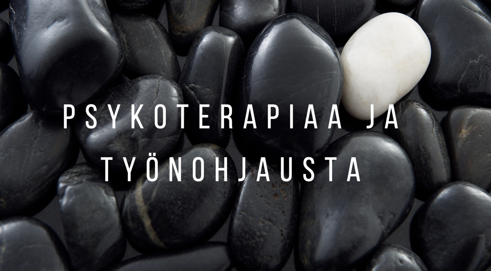

Tervetuloa kotisivuilleni. Tarjoan yksilö-, pari- sekä perhepsykoterapiaa. Psykoterapian ohella toimin myös yksilö- ja ryhmätyönohjaajana. Olen Kelan palvelutuottaja: kuntoutuspsykoterapiassa ja vaativassa lääkinnällisessä kuntoutuksessa (psykoterapia) 2023 - 2024.
Työskentelyotteeni on aktiivinen ja arvostava, eri psykoterapiaviitekehyksiä ja -koulutuksiani integroiva. Käyntikertojen määrä ja tiheys vaihtelevat (useimmiten kerran tai kaksi kertaa viikossa), syyt psykoterapiaan hakeutumiselle taas kattavat koko elämän kirjon.
Tärkeintä psykoterapian onnistumisen kannalta on asiakkaan ja psykoterapeutin hyvä ja turvallinen yhteistyösuhde. Itselle sopivan psykoterapeutin etsimiseen kannattaa siis panostaa ja nähdä vaivaa. Voit olla minuun yhteydessä joko puhelimitse (p. 0400-657 347), sähköpostilla tai yhteydenottolomakkeella.
Psykoterapiaan voi hakeutua itse maksavana tai sen maksuihin on usein mahdollista saada tukea. KELA:n tukeman kuntoutuspsykoterapian lisäksi myös työnantajallasi saattaa olla vakuutus, joka korvaa lyhytterapiaa. Vakuutuksen ehdot määrittelevät, kuinka monta terapiakäyntiä voidaan korvata. Usein korvattava määrä on 5-20 käynnin välillä. Ota yhteys työterveyshuoltoosi ja selvitä, voiko heidän kauttaan saada korvatuksi lyhytterapiaa.
Joissakin tapauksissa henkilökohtainen vakuutus, kuten terveysvakuutus, voi korvata myös psykoterapiaa. Jos sinulla on terveysvakuutus, sinun kannattaa selvittää, kuuluvatko psykoterapian kustannukset sen piiriin.
Työnohjaus on tavoitteellista toimintaan, jossa ihmisiä autetaan löytämään mielekästä ja merkityksellistä tapaa tehdä työtään. Työnohjaus on sovittavissa tilaajan tarpeiden ja tavoitteiden mukaisesti hyvin joustavasti – käyntitiheyttä ja prosessin kestoa määrittelee tilaajan (yksilön tai ryhmän) tarpeet ja toiveet. Toimin sekä yksilö- että ryhmätyönohjaajana.